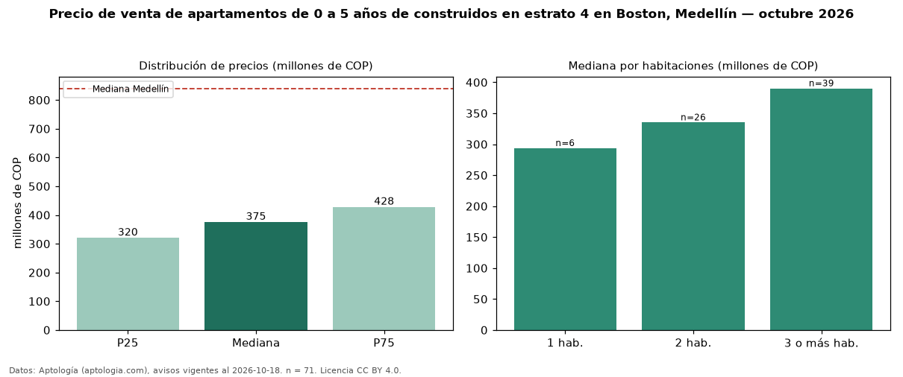

Precio de venta de apartamentos de 0 a 5 años de construidos en estrato 4 en Boston, Medellín — octubre 2026
En Boston, Medellín, la mediana de precio de venta de apartamentos de 0 a 5 años de construidos en estrato 4 es COP 375 millones, según 71 avisos vigentes. Eso es 4 % más que la mediana de los apartamentos en estrato 4 en venta de Boston (COP 360 millones, n = 101); este segmento reúne el 70 % de esos avisos. Por metro cuadrado, la mediana es COP 5,10 millones/m² (n = 71), 2 % por debajo de los apartamentos en estrato 4 en venta de Boston (COP 5,23 millones/m²). El área mediana anunciada es 67 m². El segmento con más oferta es el de 3 o más habitaciones (39 avisos, mediana COP 390 millones); pasar de 1 habitación a 3 o más habitaciones cambia la mediana +33 %. La administración mediana declarada es COP 320.000 al mes (n = 29). La mediana de todos los apartamentos en venta de Medellín es COP 840 millones (−55 % de diferencia). 74 % de los avisos con el dato declara parqueadero. Datos: Aptología (aptologia.com), CC BY 4.0 — https://www.aptologia.com/venta/medellin/boston. Archivos: PDF, CSV con las cifras y gráfica PNG.

| Avisos únicos | 71 |
|---|---|
| Percentil 25 | COP 320.000.000 |
| Mediana | COP 375.000.000 |
| Percentil 75 | COP 427.500.000 |
| Mediana por m² | COP 5.104.166 |
Fuente: avisos vigentes de portales inmobiliarios recopilados por Aptología, deduplicados (mínimo 30 avisos únicos por celda). Precios pedidos, no cerrados. Fecha: 2026-10-18.